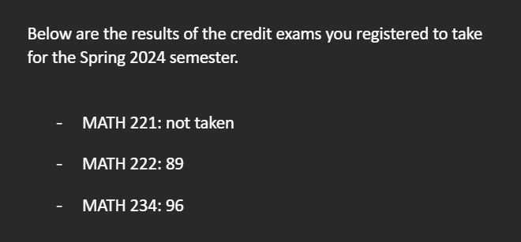

Quick Review of Janurary
Hey guys! There are quite alot of things that happened in Janurary, so why not I make a quick recap?
The first biggest thing I done was skipping calculus 2 & 3 in 1 month without much prior experience. The reason I wanted to do that is because I’m seriously considering double majoring in math, and so I wanted to take proof-based linear algebra instead of computational based ones, which requires multivariable calculus (The computational one needs calc 2 too, so I kinda had to at least pass one of two).
Luckily, I feel like US universities have very easy problems for tests, so I knew this is achievable.
I first started studying calc 2, and honestly it wasn’t that bad. integration techniques are quite easy once you know how to identify them, and for series tests its really also just experience, even if one test fails you can always just try other ideas. For taylor series you kinda just memorize the formula and it should be okay. Vectors and planes were pretty easy for me too, as I’ve already learned them in highschool, and its also a big topic in calc 3 so I wasn’t really worried for it.
All in all, it took me around 1 week to finish calc 2 and a couple of days to really refine my skills for it.
Next, I started studying calc 3, and I personally think its way harder than calc 2 conseptually. Theres basically two main parts of calc 3, one is partial derivatives and gradients and stuff like that, its pretty easy (at least for me) and I blazed through the first half of calc 3 very quickly.
The problem arises from all the new integrals. The tricky part about double/triple integrals is determining the bounds or the integral, as I don’t really have alot of time to familiar myself with all the graphs and having the ability to sketch the graph, I did everything purely numerically, which is actually quite difficult because you are integrating something you don’t know what it looks like.
Line integrals and Surface integrals can be reduced to double/triple integrals so it’s not a big deal, just that its really computational heavy, and also theres formulas for vector fields/scalar functions, parametric or normal, which makes it feel very complicated when you don’t know whats going on. I recommend trying to relate everything together and really understanding why the formula is as such instead of just remembering them.
The last part of calculus 3 is the three big theorems: Greens Theorem, Stokes Theorem and Divergence Theorem. They are not really hard to memorize at all, and most of the time the problems are obvious enough for you to just use the theorems.
In summary, calc 3 was trickier than calc 2, but through some understanding it was alright.
Now in test day, I was pretty worried when I first saw the calc 2 exam, it was quite a hard exam at least compared to all the past in class finals. The computation was quite heavy, and a couple problems required me to use some tricks that I knew (I used a couple of times), and there were some IBPs and squeeze theorems used to test for convergence/divergence that isn’t completely obvious. There was one problem about finding the degree 3 taylor polynomial of , which I think they were talking about order instead of degree, as the coefficient of odd terms for both and are both zero, but I was worried that its just I didn’t study enough and so I didn’t ask if the problem was wrong.
After two hours of trying to find a non-existent term in a taylor polynomial, I had to start taking calc 3 exam immediately (I had to take exams back to back, which is 4 hours of calc tests in total). Luckily, the calc 3 exam was much easier than calc 2, and I finished it in under half a hour, but because I was too tired after the calc 2 exam, I was alot of calculation errors when I first wrote it, luckily I think I fixed most of them I can identify so I was quite confident with my calc 3 score.
Now, how did I do in the tests?

Yep, I passed all the exams :D (>= 75 to pass)
This is honestly a very big achievement for me, as I have always saw myself as someone horrible at math, but I managed to pass exams in one month that normal classes would take a whole year!
After this, I swapped out my calc 2 class to MATH 341: Linear Algebra, which is the proof-based class I wanted to take, and I’m currently enjoying proving stuff with axioms, its just so satisfying!
I also got in a grad-level course, which is CS 760: Machine Learning. I took it because 1) I couldn’t do undergrad machine learning because of prerequisites (Why does my school don’t have APs bruh), so I just took the grad version instead, as the only prerequisite for grad courses is having graduate standing, which you can bypass by communicating with the professor. 2) I am quite passionate about ML/DL, and I’ve already had quite some experience with it (I know like 90% of the course material, just much more high level than what the course is teaching), and also taking this class will allow me to take CS 762: Advanced Deep Learning, which is the real deal here.
Currently, I’m struggling quite a bit with the probability/statistics and notation parts of the course, as I kinda don’t have much exposure to it, but I’ll try my best to understand fully!
Lastly, I’m currently applying to summer REU (Research Experiences for Undergraduates) programs, I hope I can get into at least one of them so I can accumulate research experience over the summer!
Thats kinda the major stuff I’ve done in Janurary, and I also haven’t broken any new years resolutions yet, yay! I did make doing 5 problems everyday on CF into do problems everyday on CF, because forcing myself doing 5 problems only made me do easy 800~1000 problems alot of the time because of time pressure, but I’ll continue to try my best!